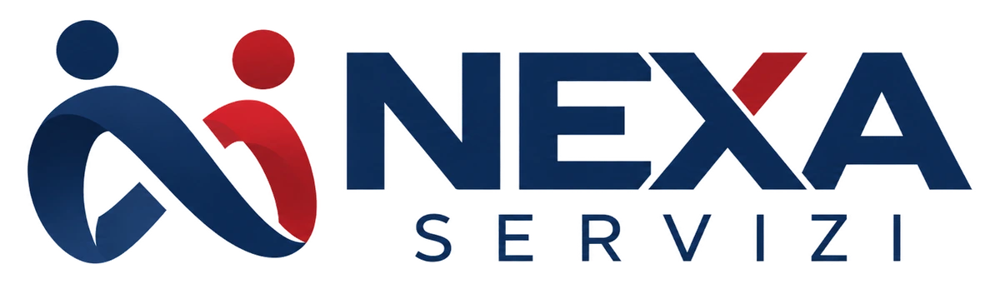

Dal problema a un'applicazione utilizzabile
Definizione dei flussi, degli utenti, delle schermate, delle regole sui dati, delle verifiche e delle priorità del software.
Sviluppo assistito dall'AI con test e correzioni iterative.

03 / Operatore automatore · Power user · Progettazione software
Unisco conoscenza operativa, analisi dei requisiti e sviluppo assistito dall'intelligenza artificiale per trasformare problemi ricorrenti in applicazioni, gestionali e automazioni verificabili.
Non parto dal linguaggio di programmazione: parto dal processo, dalla persona che lo utilizza e da come verificare che funzioni.
Definizione dei flussi, degli utenti, delle schermate, delle regole sui dati, delle verifiche e delle priorità del software.
Trasformazione di attività ripetitive tra fogli, CRM, portali e documenti in procedure controllabili.
Comprensione dei gestionali dal lato di chi li utilizza: esplorazione delle funzioni, analisi dei dati e definizione di procedure più efficienti.
Uso avanzato di coding agent per progettare, implementare, verificare e aggiornare applicazioni web e piccoli sistemi dedicati.
Applicazioni per gestire dati contrattuali, documenti, firme, scadenze e attività amministrative.
Interfacce e flussi che collegano personale, dati e attività: dalle richieste dei clienti fino alla presa in carico sul territorio.
Casi su dati, assistenza clienti, documenti commerciali, squadre operative e strumenti personalizzati.
Applicazione per gestire la casa, le stanze e le attività di manutenzione, con un'interfaccia spaziale dedicata.
Il mio percorso unisce competenze commerciali, capacità di analisi, progettazione software e supporto operativo.
Gestione commerciale, anagrafiche, listini, contratti e processi documentali: sei casi operativi sviluppati da Simone Mazzella.
Approfondisci →02 / ALTRE COMPETENZEPulizia, arricchimento e unificazione anagrafiche, CRM, Excel, Google Sheets e analisi di grandi archivi commerciali.
Approfondisci →03 / ALTRE COMPETENZECollaborazione freelance serale da remoto per studi e imprese: dati, documenti, CRM, trascrizioni, archivi e report a ore.
Approfondisci →04 / ALTRE COMPETENZECertificazioni e formazione di Simone Mazzella: Oracle Cloud Infrastructure 2025 AI Foundations Associate, EF SET English C1 e diploma commerciale.
Approfondisci →Raccontami il processo, i dati o l'attività. Valutiamo insieme come intervenire, anche con una collaborazione freelance serale.